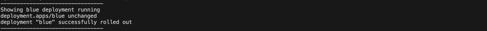
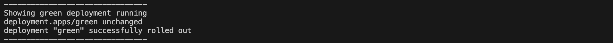
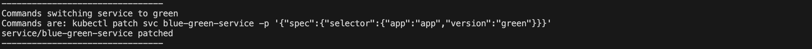
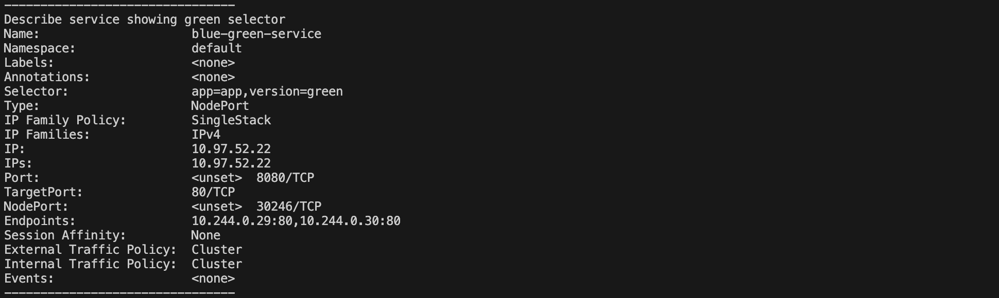
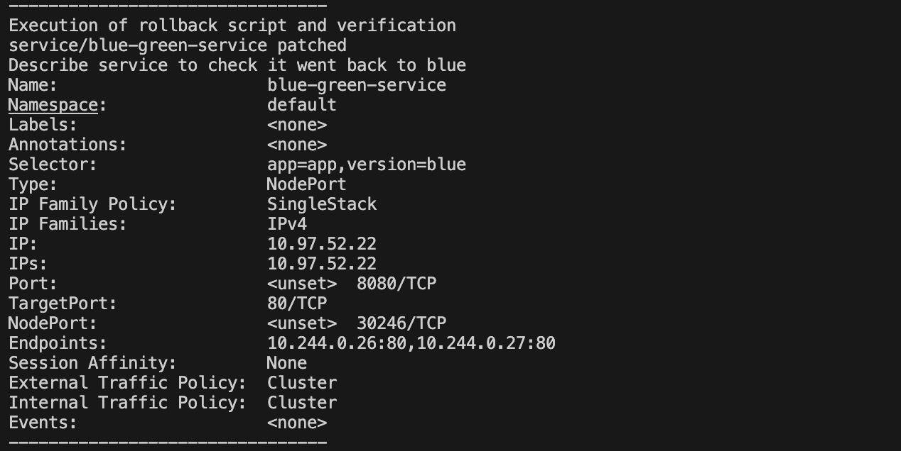

Showing both blue and green running

Describe service showing blue selector

Commands switching service to green

Describe service showing green selector

Execution of rollback script and verification

| Strategy | How it works | Advantages | Disadvantages | When to use | Links |
|---|---|---|---|---|---|
| Recreate deployment | Basically, before creating new instances with updated configurations, it shut downs all existing instances provoking a temporary runtime. | It ensures a new and clean environment, which will be exactly what was in the new pods. | As mentioned before, it's impossible to do a transition without a downtime, meaning the instances/features can not be updated without shutting down them. | Best use case is when the nature of the instance allows to work in batchs and doesn't need a totally continuous service. Then, it allows to shutdown the system to create the new environment. | Link |
| Rolling Update | Works by updating each post such that the system never shuts down. Basically, it redirects traffic out of the pod that needs to be updated making the other pods to handle more requests. When the pod is done updating, it will start handling requests while another pod takes the turn to update. | Keeps availability of the system, it allows a gradual introduction of a new version making easier to keep track of any issues that may come. | Rolling back might be challenging because you'll need to rollback certain instances, not the whole environment. Also, the service operates in inconsistent states while updating all pods. | When having a service that needs continuous availability. This strategy allows to keep the service running while in the back, updates are happening. | Link Link Link |
| Blue-Green deployment | You have two environments: Blue (old one) and Green (new one with the new version). After setting up the green environment, need to redirect all traffic to the new environment and keep track of it's performance. If something wrong happens and need to rollback, you can switch back the traffic to the blue environment. | Since it relies only in traffic redirection, it allows a very high availability. It also allows a very fast rollback process (also allows to deploy with more confidence). | Two environments running means almost double cost of direct operating costs. Also, needs more overhead to keep track of performance of new environment. The load balancer is also a thing, to know when and how to switch. | For organizations or services with a very high demand for availability. Also, it's good for regulated companies that need to be compliant and need transparency when doing changes to the platform. | Link |
| Canary deployment | Works by releasing a new version only to a subset of all users. It's not a all-in upgrade, but a very partial one. | It mitigates risk by rolling out the updates to a subset of users. It keep the update controlled, and if it fails, it will only do so for a small subset of all users. It's cost effective since it doesnt need two environments to run | It doesn't catch all problems since its only targeted to a subset of users, which may not be handling the service as the total user population. It need a strategy for which users the new updates will be rolled out. | Very useful for testing technical stability of new features, benchmark performance, and others. | Link |
| A/B Testing | Like Canary Deployment, it releases new features to a subset of all users. It works by releasing and then record performance of the old v/s the new performance. After it, management can decide with data in hand if developing completely or deploying completely the new feature. It's mostly related with UI of the service or the app. | Cost effective to check value of new features. Provides real data on what happened with the new version vs the old version. | Need strategy of redirection. It doesn't provide any explanation on why things happened with the new version, but only what happened. | Most of the times use it to try UI things. At my old job we used it a lot to try new wording for a message we wanted to communicate, pictures, colors, etc. | Link |